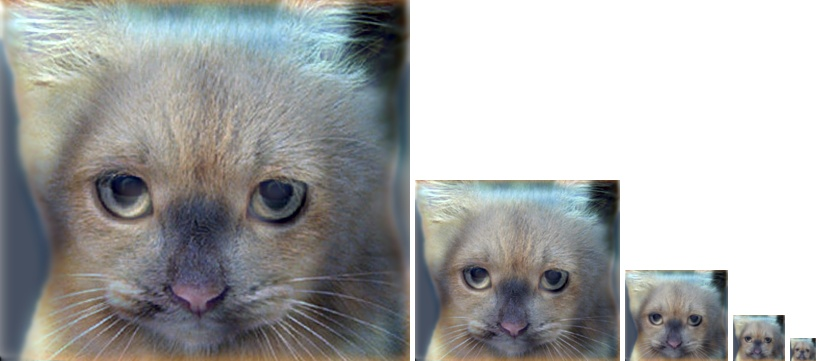

Project 1: Image Filtering and Hybrid Images
Remember: we will practice anonymous TA grading, so please don't include your name or ID.
Answered Questions
1. Explicitly describe image filtering (the input, the transformation, and the output) and why it is useful for computer vision.
The inputs of image filtering are an image and a filter. The transformation process is that for each pixel in the image, its value equals to the sum of the element-wise multiplication between the filter and the submatrix of image that centers at the pixcel. The output of image filtering is the average of all the neighboring pixels weighted by the filter matrix. With imaging filtering, we can do image processing such as blurring, sharpening, edge detection, and so on.
2. What is the different between a high pass filter and a low pass filter in how they are constructed, and what they do to the image?
High pass filter filters out low frequencies of an image while low pass filter filters out high frequencies. Low pass filter is constructed through a filter matrix that averages each pixcel with its neighbors, high pass filter is constructed by adding the differences around a pixel to that pixel. High pass filter highlights the edges of an image, while low pass filter blurs the image.
3. How does the Fourier transform relate to image filtering?
Fourier transform converts an image from spatial domain to frequency domain. By examining a filter in its frequency domain, we can obtain additional insights about the filter. For example, a box filter in fourier transformation have ripples spreading out almost infinitely, while a Gaussian filter's frequency domain looks smooth; this allows us to understand why a box filter results in edgy artifacts whereas Gaussian filter gives smooth result. Another benefit of Fourier transform stems from the convolution theorem, which says "the Fourier transform of the convolution of two functions is the product of their Fourier transforms". When applying multiple filters, applying Fourier tranform to the filters and then multiply outcomes and apply inverse FFT is the same as image filtering in spatial domain but only much faster.
Implementation
my_imfilter Matlab implementation
%my_imfilter code
[m, n] = size(filter);
if mod(n, 2) == 0 || mod(m, 2) == 0
msg = 'Filter width not odd!';
error(msg)
end
padVertical = floor(m / 2);
padHorizontal = floor(n / 2);
padImage = padarray(image, [padVertical, padHorizontal]);
filterFlip = rot90(filter, 2);
output = zeros(size(image, 1), size(image, 2));
for channel = 1 : size(image, 3)
for row = 1 : size(image, 1)
for col = 1 : size(image, 2)
res = sum(sum(padImage(row : row + m - 1, col : col + n - 1, channel) .* filterFlip));
output(row, col, channel) = res;
end
end
end
Explainantion of the implementation
- First step is to get and check the filter size. I have to make sure that the filter size is odd on both dimensions, otherwise we output an error message.
- Second step is to pad the original image with pixels. The number of padded pixels on pre and post the image on each dimension equals to the round down of half of the filter size on that dimension. A padarray function is used here. By not specifying the pad type, the image is padded with 0s
- Third step is to apply the filter to the padImage and assign the calculation result to the final output. I decided to do convolution here because is more commonly used, so I rotate the filter by 180 degrees (actually 90 degrees twice). Then I initialize the output with 0s, and then loop through every pixel of the output in each channel assigning the results of the elmement-wise mulitplication between the filter and padImage. At the end of the loops, the image is filtered
Results of my_imfilter()

identity_image

blur_image

blur_image
laplacian_image
sobel_image
Hybrid Image Implementation
%proj1 code - hybrid image
low_frequencies = my_imfilter(image1, filter);
%%%%%%%%%%%%%%%%%%%%%%%%%%%%%%%%%%%%%%%%%%%%%%%%%%%%%%%%%%%%%%%%%%%%%%%%
% Remove the low frequencies from image2. The easiest way to do this is to
% subtract a blurred version of image2 from the original version of image2.
% This will give you an image centered at zero with negative values.
%%%%%%%%%%%%%%%%%%%%%%%%%%%%%%%%%%%%%%%%%%%%%%%%%%%%%%%%%%%%%%%%%%%%%%%%
high_frequencies = image2 - my_imfilter(image2, filter);
%%%%%%%%%%%%%%%%%%%%%%%%%%%%%%%%%%%%%%%%%%%%%%%%%%%%%%%%%%%%%%%%%%%%%%%%
% Combine the high frequencies and low frequencies
%%%%%%%%%%%%%%%%%%%%%%%%%%%%%%%%%%%%%%%%%%%%%%%%%%%%%%%%%%%%%%%%%%%%%%%%
hybrid_image = high_frequencies + low_frequencies;
Explanation of Implementation
Low frequency image is generated by direclly applying the filter to the image. High frequency image is genereted by first applying the filter to the image and then substract the result from the original image. Hybrid image is generated by adding the high frequency and low frequency images.
Results of hybrid image

|

|
|
|
|

|

|
|
|
|

hybrid_image
hybrid_image_scales